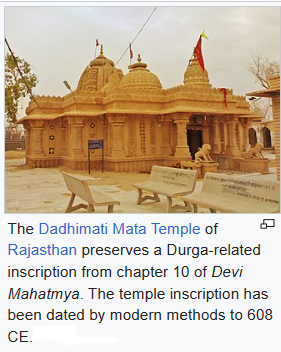
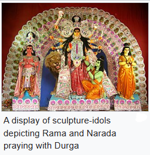

 
Durga is an ancient goddess of Hinduism according to available archeological and textual evidence. However, the origins of Durga Puja are unclear and undocumented. Surviving manuscripts from the 14th-century provide guidelines for Durga Puja, while historical records suggest the royalty and wealthy families to be sponsoring major Durga Puja public festivities, since at least the 16th-century. The 11th or 12th-century Jain text Yasatilaka by Somadeva mentions an annual festival dedicated to a warrior goddess, celebrated by the king and his armed forces, and the description mirrors attributes of Durga Puja.
The name Durga, and related terms, appear in Vedic literature, such as in the Rigveda hymns 4.28, 5.34, 8.27, 8.47, 8.93 and 10.127, and in sections 10.1 and 12.4 of the Atharvaveda. A deity named Durgi appears in section 10.1.7 of the Taittiriya Aranyaka. While the Vedic literature uses the word Durga, the description therein lacks legendary details about her or about Durga Puja that is found in later Hindu literature. A key text associated with Durga Puja is Devi Mahatmya, which is recited during the festival. Durga was likely well established by the time this Hindu text was composed, which scholars variously estimate Durgato date between 400 and 600 CE. The Devi Mahatmya scripture describes the nature of evil forces symbolised by Mahishasura as shape-shifting, deceptive, and adapting in nature, in form and in strategy to create difficulties and thus achieve their evil ends. Durga calmly understands and counters the evil in order to achieve her solemn goals. Durga, in her various forms, appears as an independent deity in the Indian texts. Both Yudhisthira and Arjuna characters of the Mahabharata invoke hymns to Durga. She appears in Harivamsa in the form of Vishnu's eulogy and in Pradyumna's prayer. The prominent mention of Durga in such epics may have led to her worship.
The Indian texts with mentions of Durga Puja are inconsistent. A legend found in some versions of the Puranas mentions it to be a spring festival, while the Devi-Bhagavata Purana and two other Shakta Puranas mentions it to be an autumn festival. The Ramayana manuscripts are also inconsistent. Versions of Ramayana found in the north, west, and south of the Indian subcontinent describe Rama to be remembering Surya (the Hindu sun god) before his battle against Ravana, but the Bengali manuscripts of Ramayana, such as the Krittivasi Ramayana, a 15th-century manuscript by Krttivasa, mention Rama to be worshipping Durga. As per the legend, Rama worshipped Durga in the autumn to have her blessings before defeating Ravana. While he was preparing for the worship of the goddess, Durga hid one of the 108 flowers of lotus, very essential for her worship. Having found only 107 of 108 lotuses at the time of the worship, Rama decided to offer one of his eyes in place of that lotus. When he was about to offer his eye, Durga appeared and told him that she had only hidden the flower in order to test his devotion and she was satisfied with it. She blessed Rama and Rama continued with her worship, which is better known by Akaal Bodhan in the context. According to some scholars, the worship of the fierce warrior goddess Durga, and her darker and more violent manifestation Kali, became popular in the Bengal region during and after the medieval era, marked by Muslim invasions and conquests.
The significance of Durga and other goddesses in Hindu culture is stated to have increased after Islamicate armies conquered regions of the Indian subcontinent. According to yet other scholars, the marginalization of Bengali Hindus during the medieval era led to a reassertion of Hindu identity and an emphasis on Durga Puja as a social festival, publicly celebrating the warrior goddess. From the medieval era up to present-day, Durga Puja has been celebrated as a socio-cultural event, while maintaining the roots of religious worship.